Diseño completo del local
Exterior
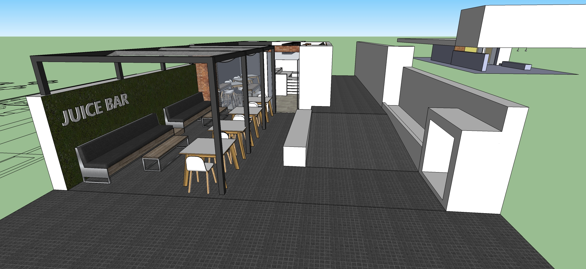
Fondo
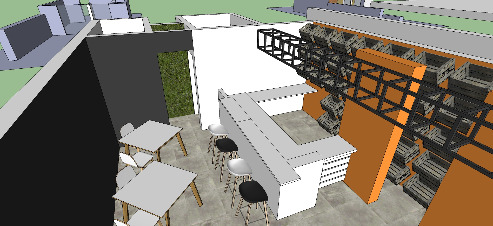
Entero
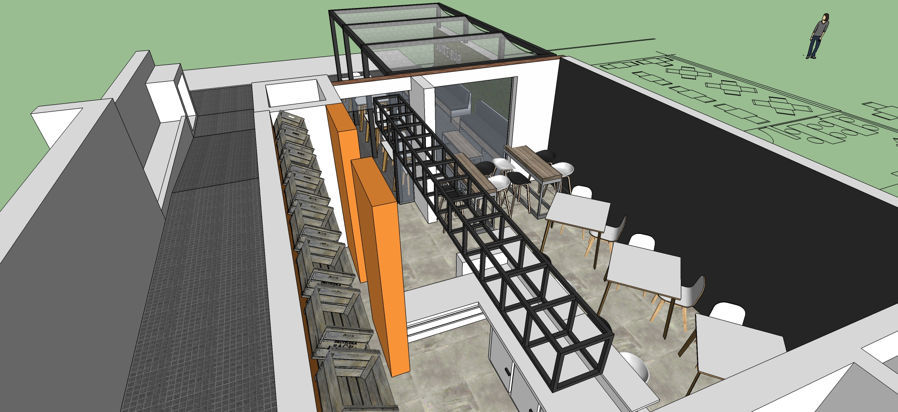
Archivo de sketch-up: para descargar | Versión 2017
Croquis del local
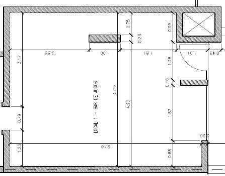
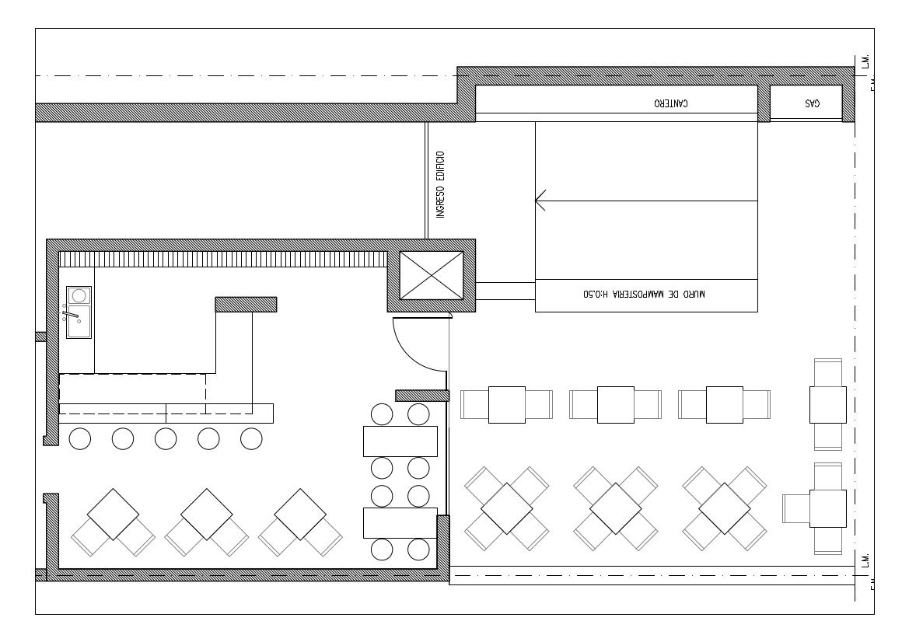
Barras
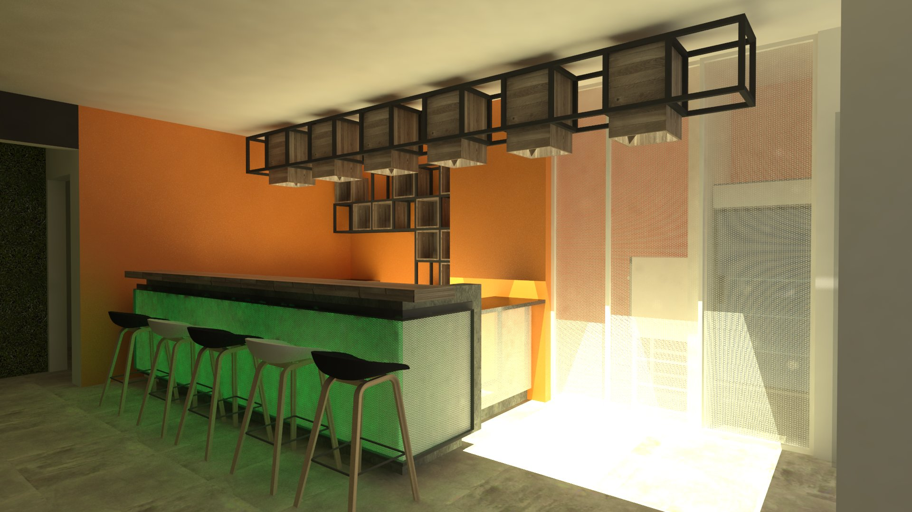 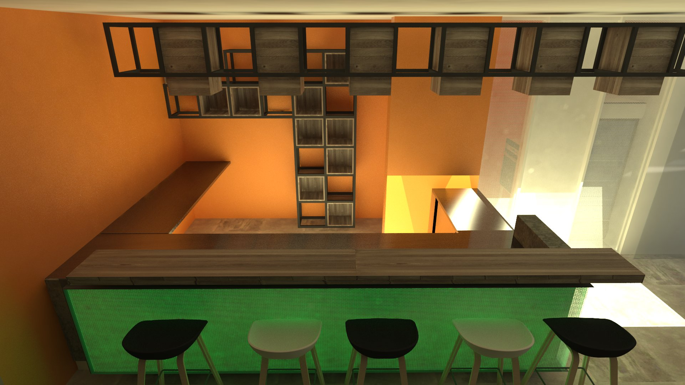
Ideas
- Color Pared Interior
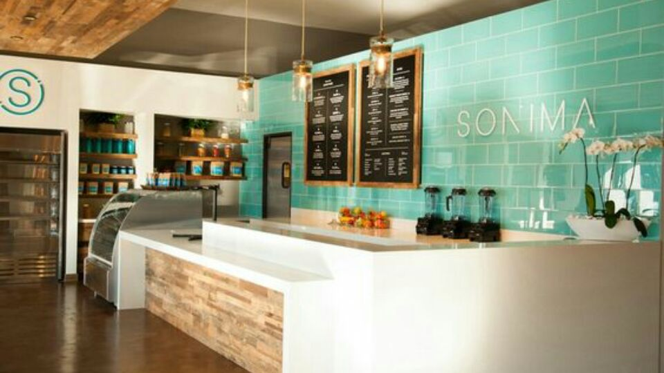
- Jerbo
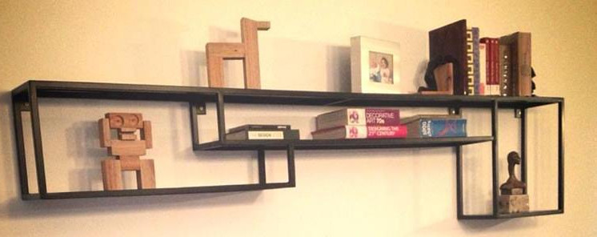
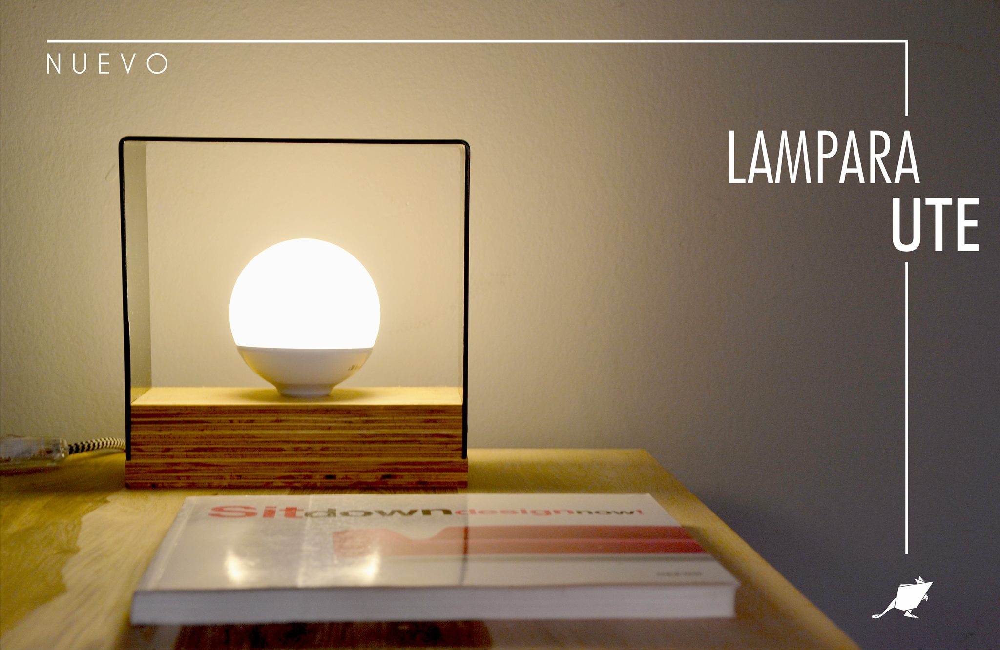
- Rüm
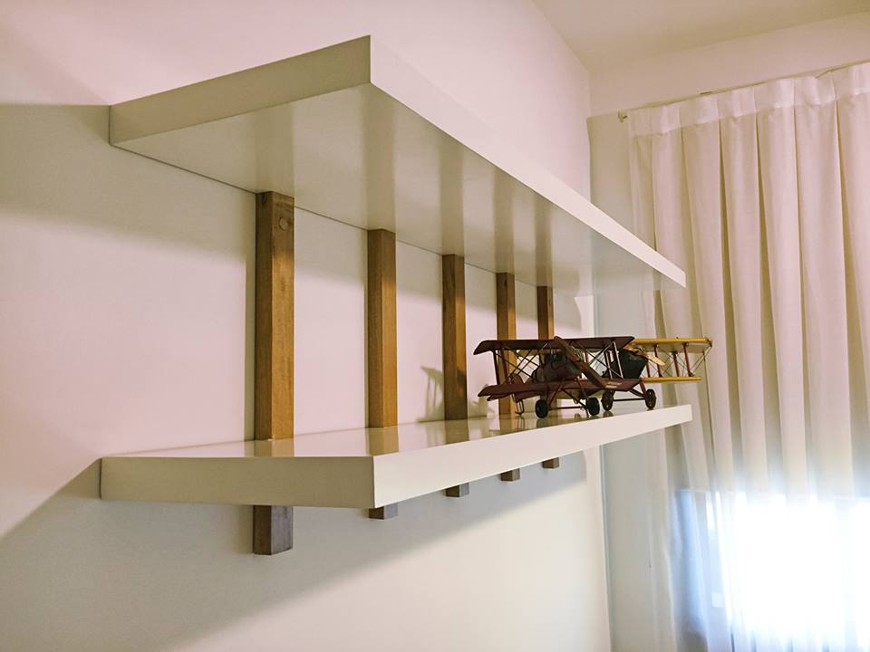
Baños
- Espejo ✓
- Porta papel higiénico ✓
- Porta papel para manos ✓
- Porta jabón líquido fijo para manos ✓
- Cartel de género ✓
[colocar] ✗
- Pintar puertas con protector ✗
- Ganchito para colgar cartera ✗
- Tachos
- Detalle?
- Papel ...
- Jabón líquido ...
Papeles/Requisitos